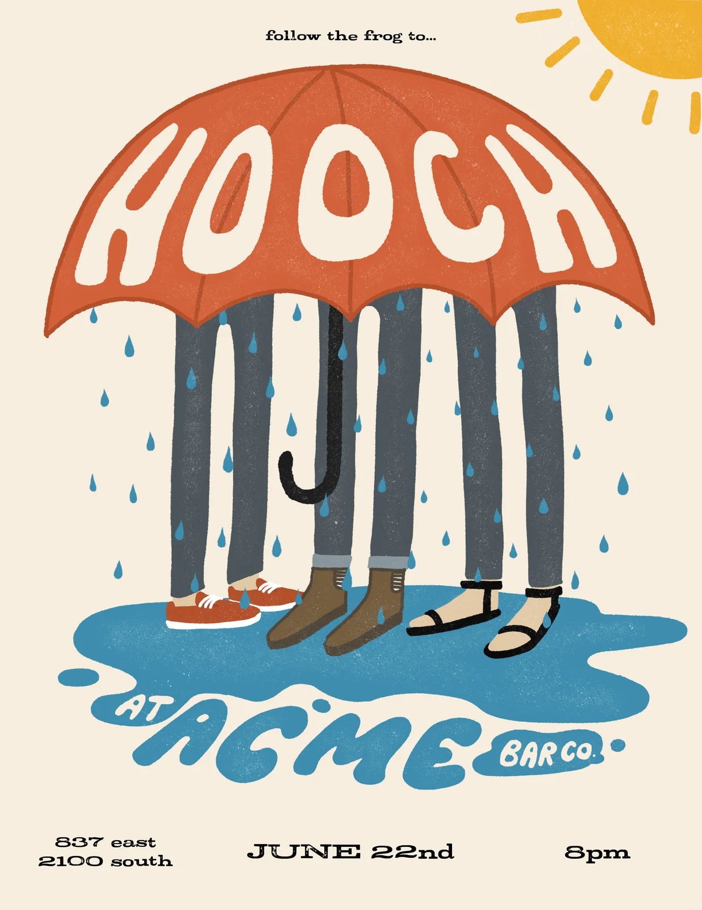
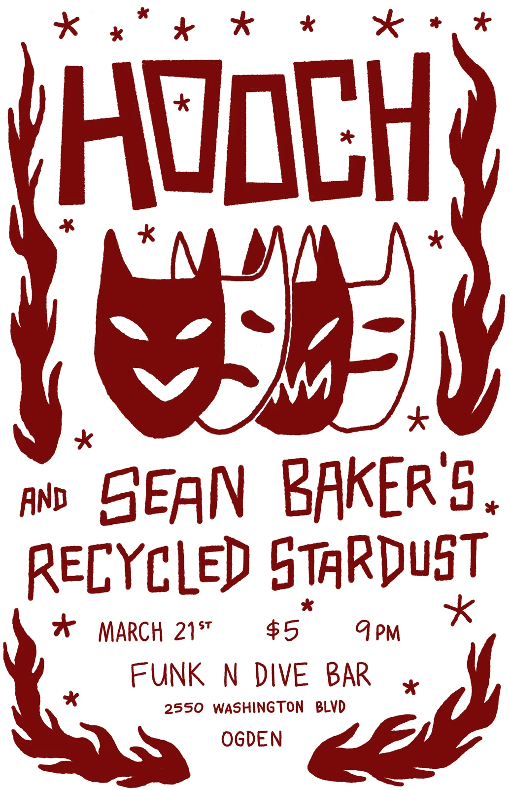
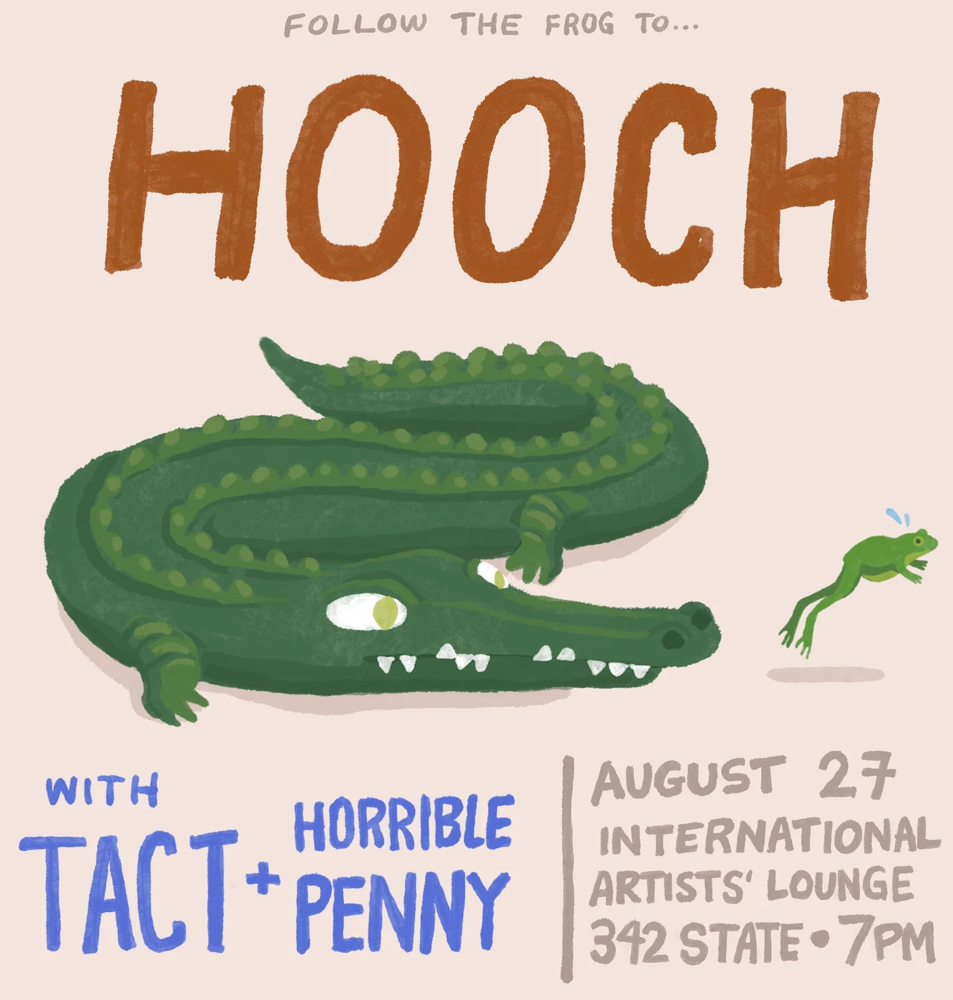
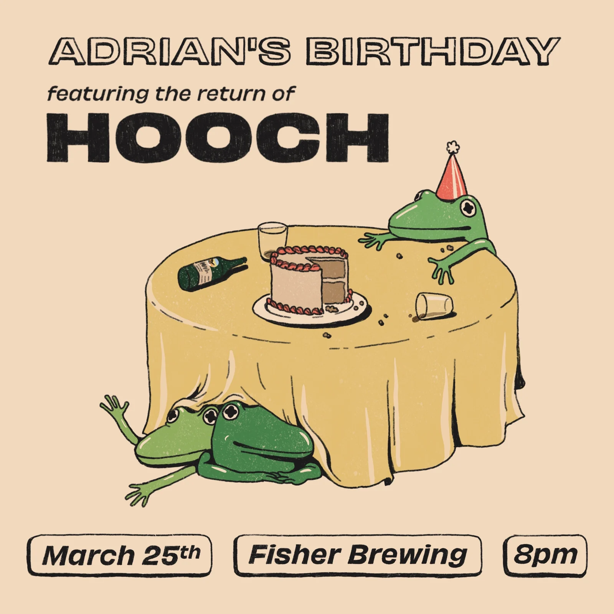

Hooch Gig Posters
posters and show flyers
I make the posters and show flyers for the band Hooch. Over time they’ve grown into their own visual world: a loose, recurring cast of characters, a frog who keeps turning up to lead the way, and a hand-drawn look that makes each one recognizable as a Hooch show before you read a word.
A poster has to stop someone walking past a crowded bulletin board, then tell them who, where and when in a few seconds.



Every poster is drawn and lettered by hand, and the lettering is built to match the drawing: chunky painted capitals, a name bent around the curve of an umbrella, rough cut-out letters, or a clean slab when the layout needs to be tight.

Whatever the style, the hierarchy stays the same: the band name first, then the date, venue and time, set so they can be read from across a room.